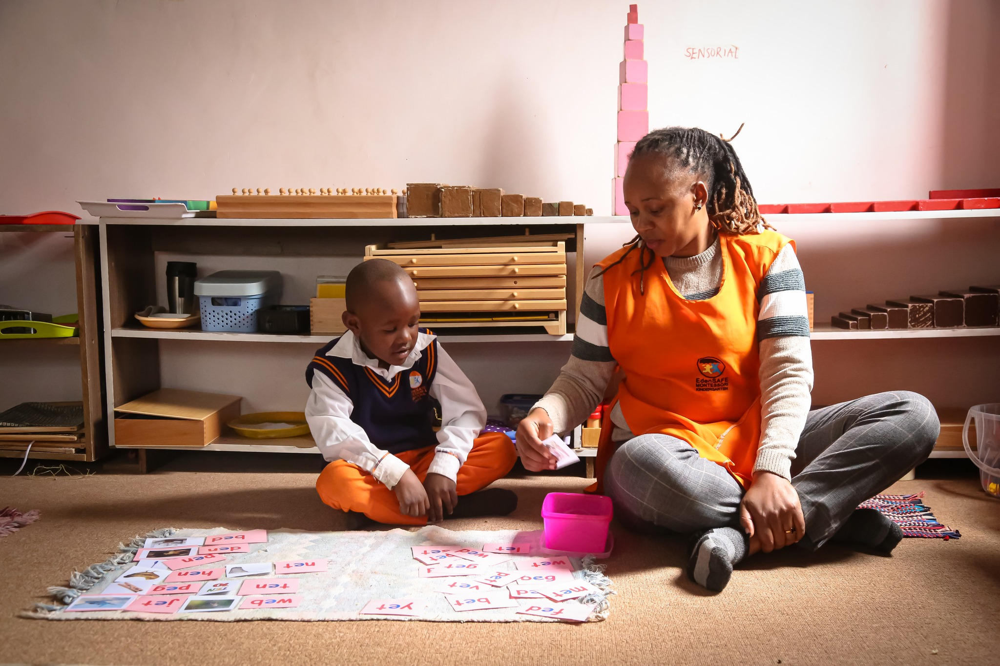
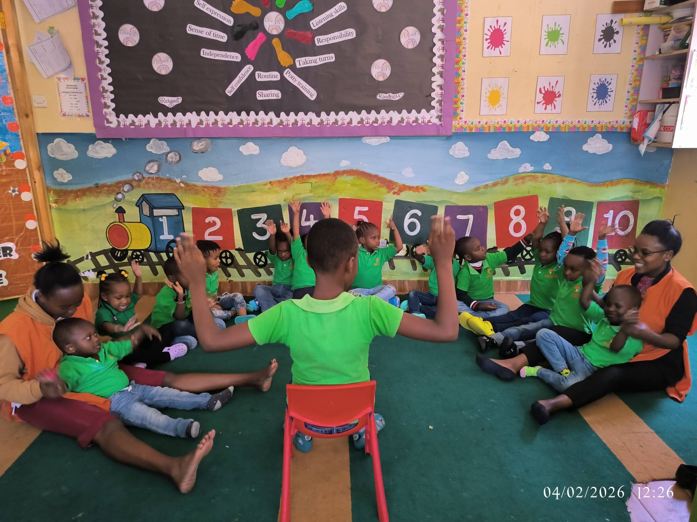
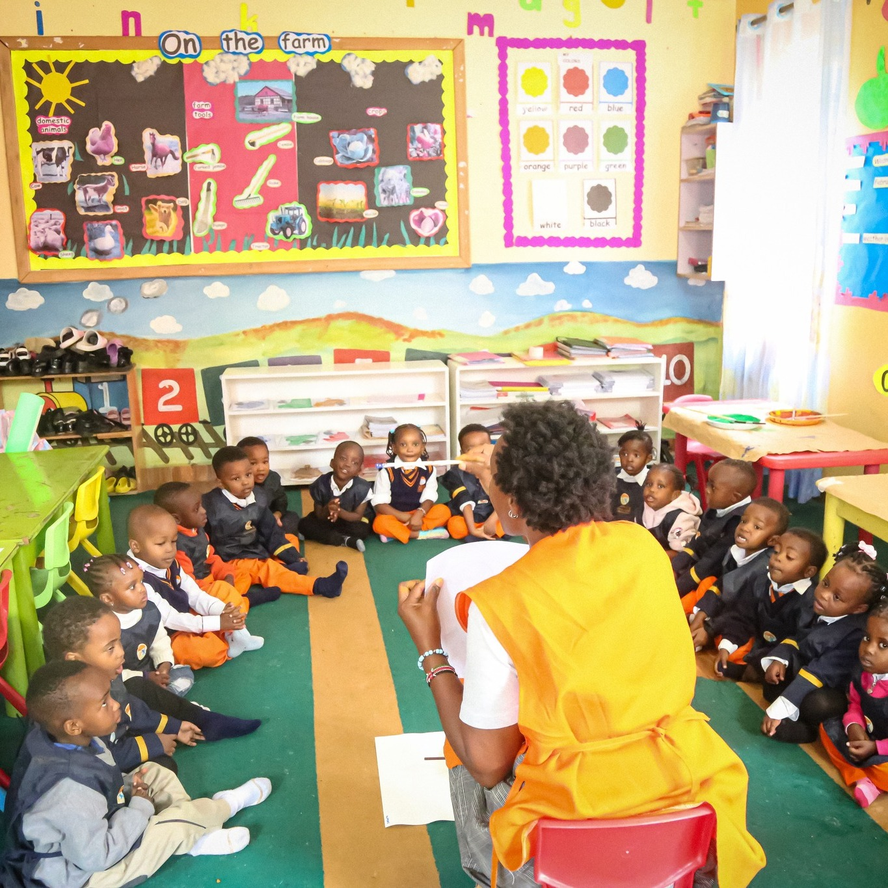
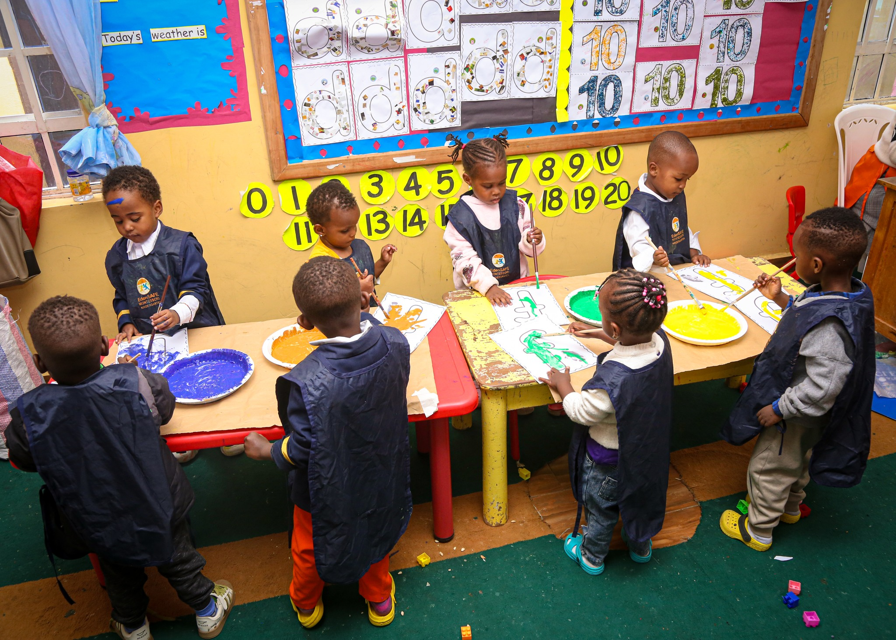
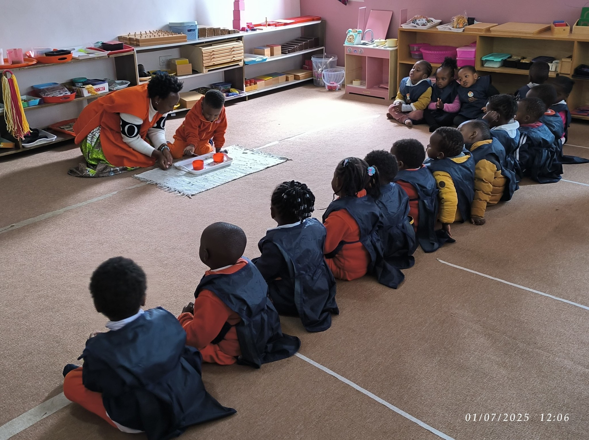
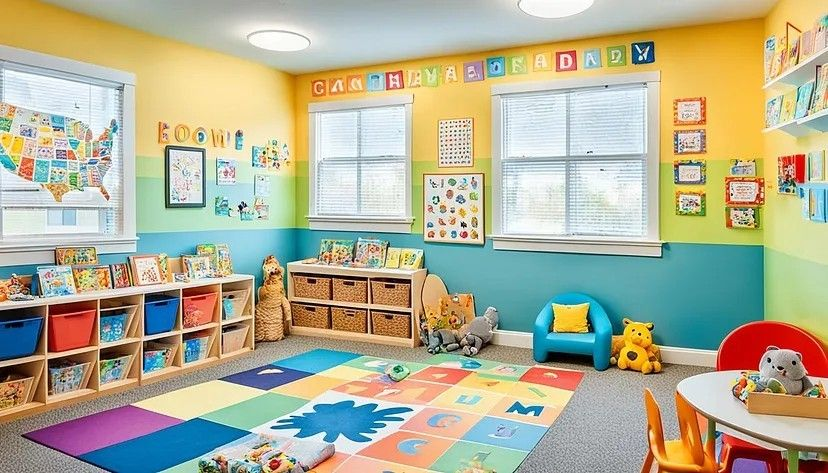

At Edensafe Montessori, we follow the child. Every moment is designed to foster independence, concentration, and a lifelong love for learning in a prepared environment that respects each child's unique developmental rhythm.
Growth stages, beautifully simplified

Sensory exploration, movement, and language development in a nurturing, child-led space.

Purposeful work, concentration, and foundational skills through authentic Montessori materials.

Cosmic education: storytelling, research, and collaborative projects that ignite imagination.
Rooted in Montessori, aligned with global standards

Ages 18 months – 6 years. Child-led learning in a prepared environment that honors each child's rhythm and natural curiosity.

Ages 6–12. Global curriculum woven with Montessori methods to develop critical, compassionate thinkers ready for the world.
AMI-aligned certification for educators mastering child-centered pedagogy and classroom leadership through hands-on practice.
The values that guide every moment at Edensafe
We observe, listen, and respond to each child's unique interests and developmental needs with respect and patience.
Thoughtfully arranged spaces with natural materials invite independence, deep concentration, and joyful discovery.
Every interaction models kindness, empathy, and peaceful conflict resolution in our diverse community.
Children explore cultures, ecosystems, and communities to develop compassion for our shared world.
Beyond the classroom, our students discover passions, build friendships, and develop skills that last a lifetime through diverse clubs, sports, arts and leadership opportunities.
Where every detail supports independence and joy

Our classrooms feature natural materials, child-sized furniture, and accessible stations that invite exploration without overwhelm. Every element is intentional.
Children move freely, choosing work that calls to them — building executive function, problem-solving skills, and intrinsic motivation that lasts a lifetime.
Schedule a personal tour to experience our prepared environment and meet our guides. Spaces are limited to ensure individualized attention for every child.
Book Your Visit